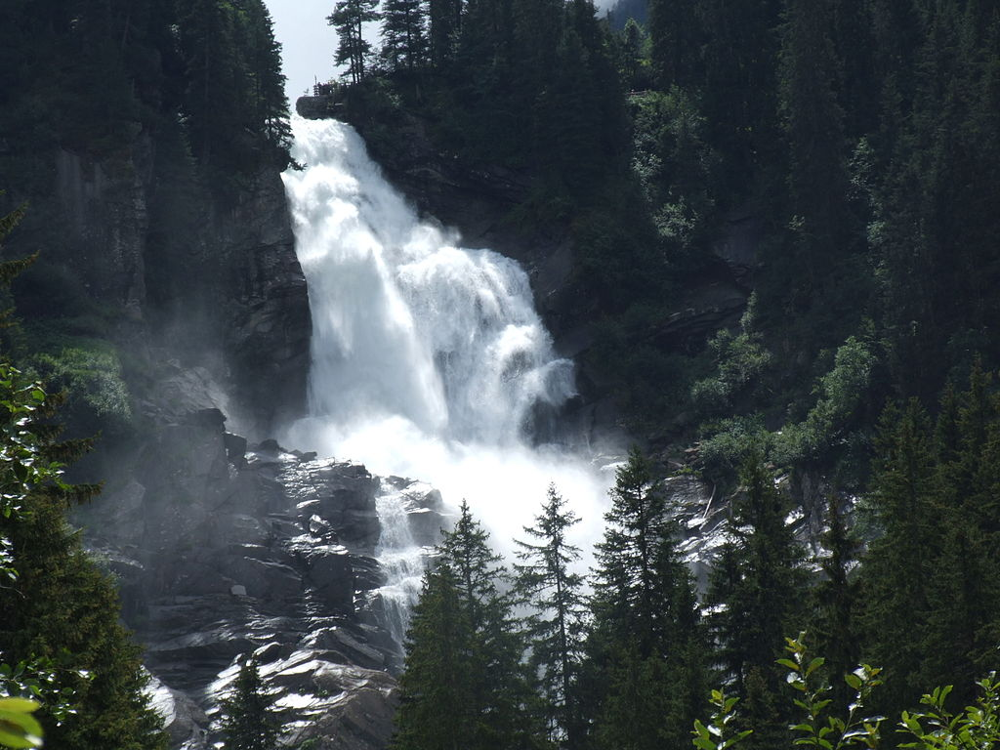
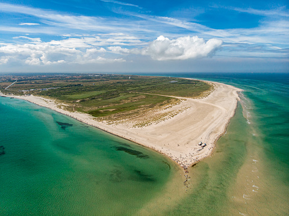
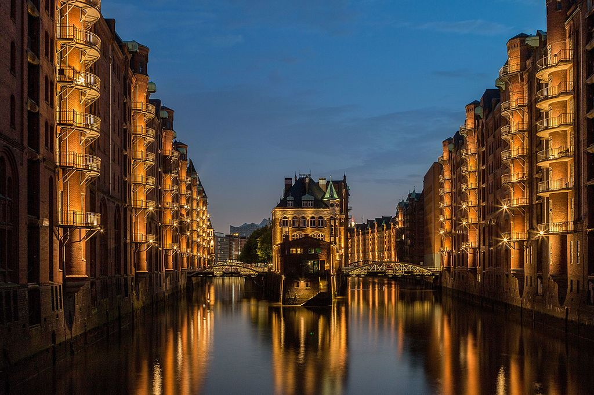
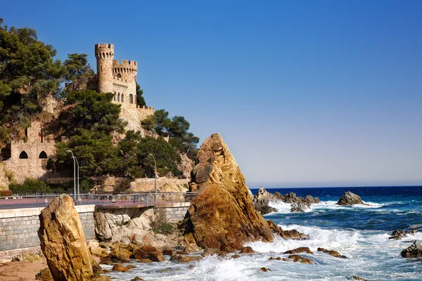
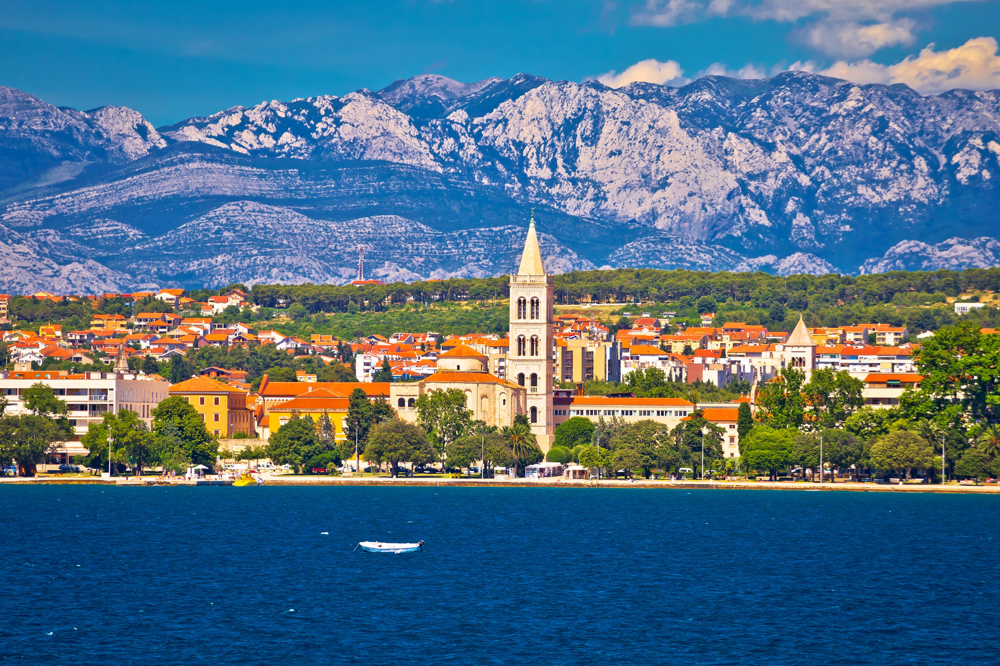

Toliau seka paragrafas, įsiminkite, paragrafas.
Žemiau galima pridėti nuotrauką ir kokį nors sąrašą.

Jeigu kažką pamiršite, visada naudokite Google
| Pavadinimas | Šalis | Buvau/Nebuvau | Paveiksliukas | Nuoroda | |
|---|---|---|---|---|---|
| 1 | Krimml | Austria |  | Wiki Krimml | |
| 2 | Skagen | Denmark |  | Wiki Skagen | |
| 3 | Hamburg | Germany |  | Wiki Hamburg | |
| 4 | Lloret de Mar | Spain |  | Wiki Lloret de Mar | |
| 5 | Zadar | Croatia |  | Wiki Zadar |